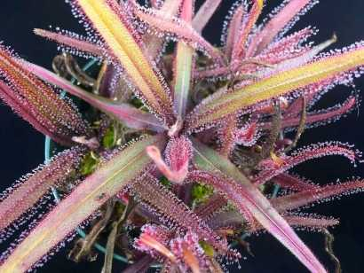
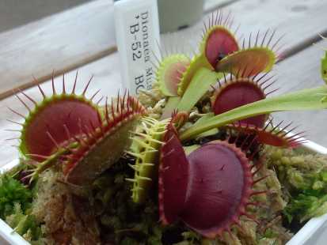

Rostliny vhodne pro začátečníky
V následujícím článku naleznete několik rostlin nenáročných na pěstování vhodných pro začátečníky a zakladní informace o nich.
Obsah
Rosnatka kopinatá
Rosnatka kopinatá (Drosera Adelae) je rosnatka původem z Austrálie. Tak jako všechny rosnatky se vyznačuje lepkavými listy, které jí slouží při chytaní hmyzu. Tato rostlina je zejména vhodná pro začátečníky, jelikož je velmi nenáročná na pěstovaní. Rosnatku stačí umístit do polostínu na okení parapet a zajistit dostatečnou zálivku, tak aby květináč neustále stál ve vodě.
| Název: | Rosnatka kopinatá | Obrázek: |
 |
|---|---|---|---|
| Země původu: | Austrálie | ||
| Náročnost pěstování: | 1/5 | ||
| Cena: | 200 Kč |
Mucholapka podivná
Mucholapka podivná (Dionaea muscipula) jedná se asi o nejikoničtější z masožravých rostlin, které je známá pro své listy s pastmi připomínajícími čelisti. Rostlina pochází ze Severní ameriky, kde rozste zejména v mokřadech Severní Karolíny. Rostlina je na pěstování o něco náročnější něž výše zmíněná rosnatka, ale stále jí v domácích podmínkách zvládne pěstovat i řada žačátečníku. Klíčové je zejména v zimních měsících omezit zálivku, jelikož v tomto období je rostlina náchylná na plísně.
| Název: | Mucholapka podivná | Obrázek: |
 |
|---|---|---|---|
| Země původu: | USA | ||
| Náročnost na pěstování: | 2/5 | ||
| Cena: | 250 Kč |